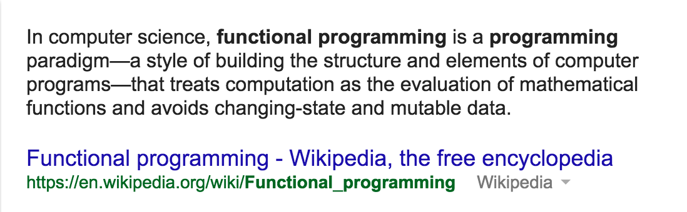
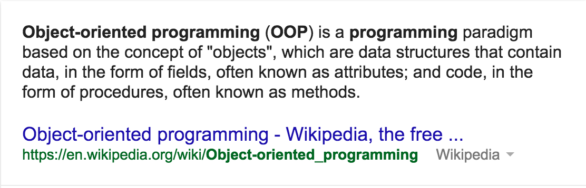

Path To Becoming a Dev
Brian Hyung Jo Park
OO vs Functional Programming
OO vs Functional Programming
July 26th, 2015
Today I'm gonna talk a little about Object Oriented vs Functional Programming. You might be asking, what does that exactly mean?


After googling "functional programming" and "Object Oriented Programming", the above is what I learned. It seems that there are fundamentally different approaches to coding when using each style.
I knew a little bit about functional programming before writing this blog due to some rough basic knowledge of Javascript. It seemed that all the tutorials and tips that I picked up through online resources demanded practical programming. It seems like functional programming focuses more on creating functions that are able to communicate with each other in a practical manner, where variables and expressions do not change(outside of the arguments given to a function). It relies more on mathmatical functions and stays away from behavior that might change the function itself.
Object Oriented programming on the other hand, focuses more about communication between objects. If you haven't studied Ruby yet, it pretty much preaches to you from the get go that EVERYTHING IS AN OBJECT, and that every object is an instance of a class. The fundamental difference between OO and Functional programming is that in OO, the objects methods can access the data that lies beneath.
It's hard to go really further in depth due to the fact that we have exactly one hour to research and blog about the differences, but from my perspective, there doesn't seem like there's too much differences besides the fact that one uses functions witout changing the state of the function itself, and the other is able to change certain attributes and access methods within their class. Mind you, I'm learning this all on the fly and I could be horribly off in my assessment. I'm hoping that with more practice in OO and more experience with languages that gear towards functional programming, I'll get a better hang of it. Till that time comes. See you next week!